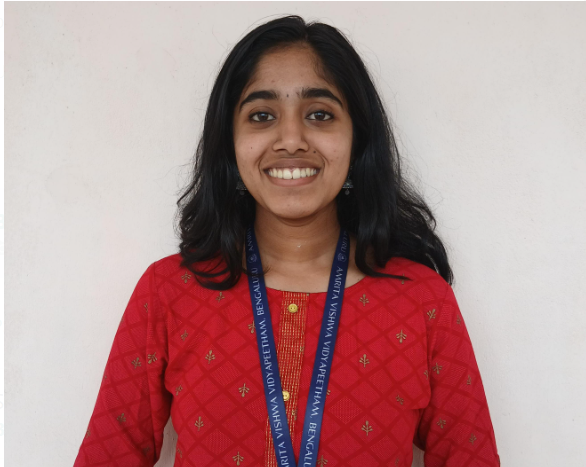

Hey there! 🙋♀️
I’m Krishnapriya, an undergraduate student at Amrita Vishwa Vidyapeetam, working at the intersection of robotics, electronics, and data-driven machine learning. I enjoy building intelligent systems from real-world sensor data and solving applied engineering problems. If you don’t find me here, I’m most likely practicing Bharatanatyam or exploring crime and historical documentaries.
Feel free to connect with me on LinkedIn or drop me an email!
